用环境变量实现多服务器版本
现存问题
在测试API期间，往往存在多种环境，对应IP地址（或域名也不同）
比如：
- Prod:
http://116.62.25.57/ucows- 用于开发完成发布到生产环境
- Dev:
http://123.206.191.125/ucows- 用于开发期间的线上的Development的测试环境
- LocalTest:
http://192.168.0.140:80/ucows- 用于开发期间配合后台开发人员的本地局域网内的本地环境，用于联合调试API接口
而在测试API期间，往往需要手动去修改API的地址：
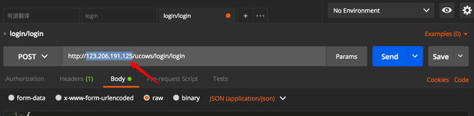
效率比较低，且地址更换后之前地址就没法保留了。
另外，且根据不同IP地址（或者域名）也不容易识别是哪套环境。
解决办法
小幺鸡的线上环境和本机环境的切换
之前得知小幺鸡，简单好用的接口文档管理工具 -》发送JSON-演示项目 中有个好用的功能：
支持不同环境：
- 线上环境
- 本地环境
等，当时以为Postman不支持呢
Postman支持用Environment环境变量去实现多服务器版本
后来发现Postman中，有Environment和Global Variable，用于解决这个问题，实现不同环境的管理：
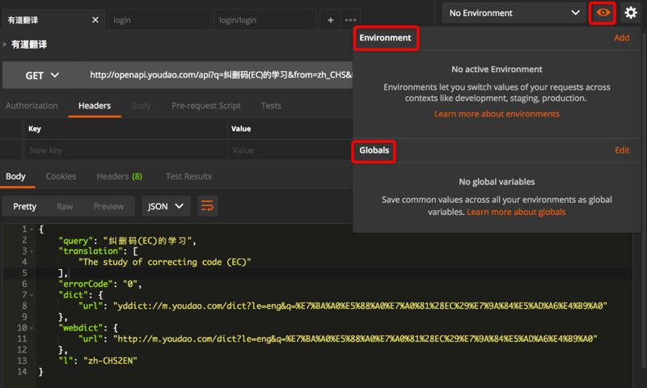
-》很明显，就可以用来实现不用手动修改url中的服务器地址，从而动态的实现，支持不同服务器环境:
- Production生产环境
- Development开发环境
- Local本地局域网环境
如何使用Enviroment实现多服务器版本
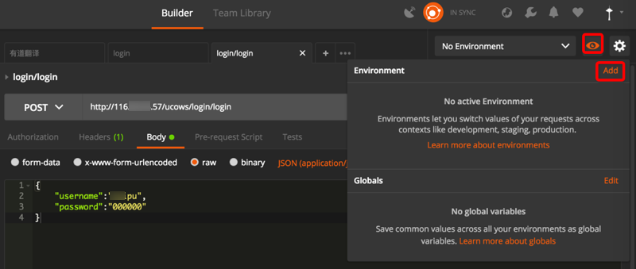
或者：
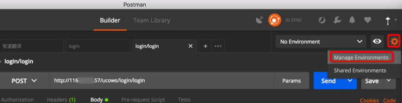
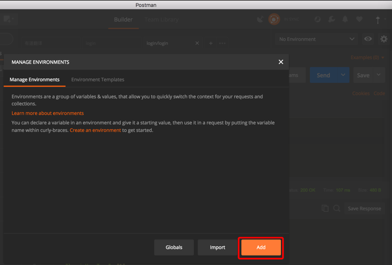
Environments are a group of variables & values, that allow you to quickly switch the context for your requests and collections.
Learn more about environments
You can declare a variable in an environment and give it a starting value, then use it in a request by putting the variable name within curly-braces. Create an environment to get started.
输入Key和value：
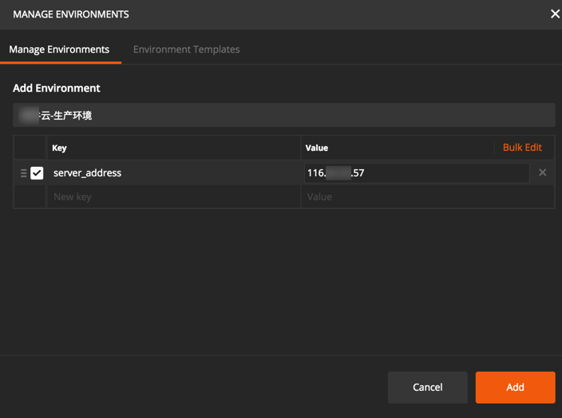
点击Add后：
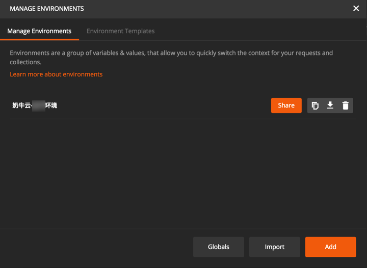
环境变量可以使用的地方
- URL
- URL params
- Header values
- form-data/url-encoded values
- Raw body content
- Helper fields
- 写test测试脚本中
- 通过postman的接口，获取或设置环境变量的值。
此处把之前的在url中的IP地址（或域名）换成环境变量：
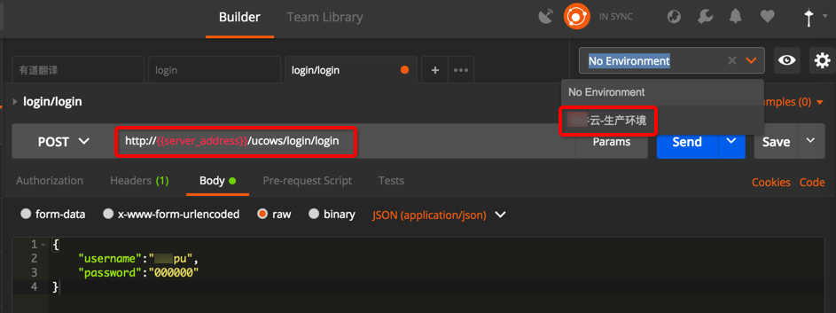
鼠标移动到环境变量上，可以动态显示出具体的值：
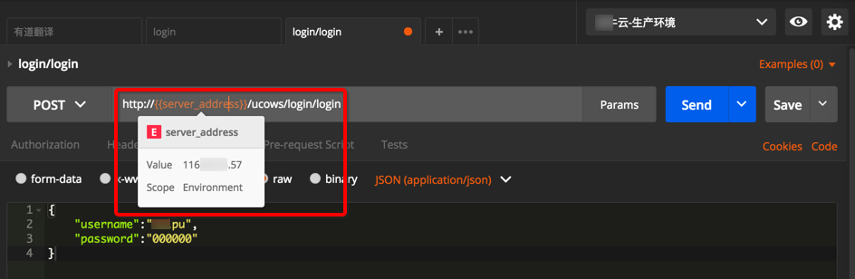
再去添加另外一个开发环境：
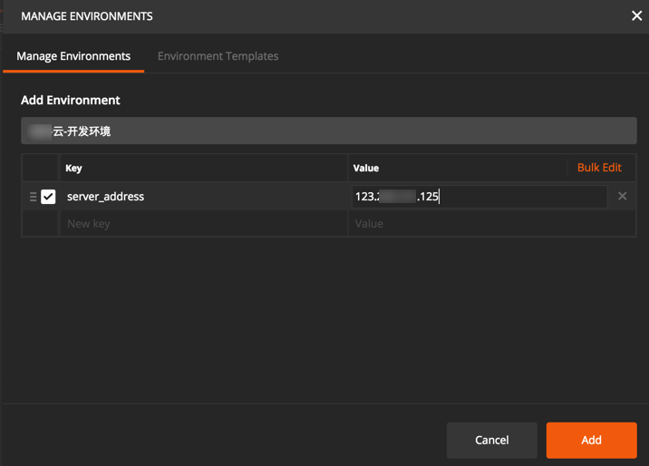
则可添加完2个环境变量，表示两个服务器地址，两个版本：
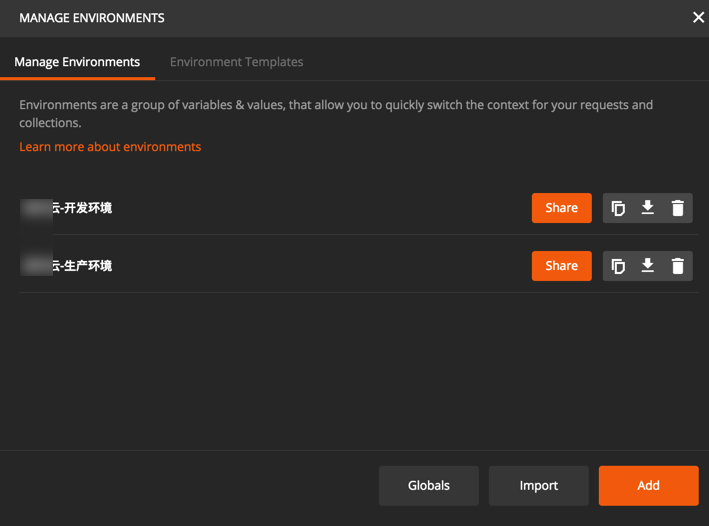
然后就可以切换不同服务器环境了：
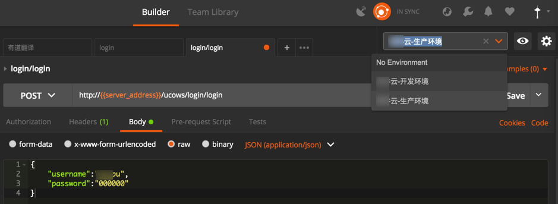
可以看到，同样的变量server_address，在切换后对应IP地址就变成希望的开发环境的IP了：
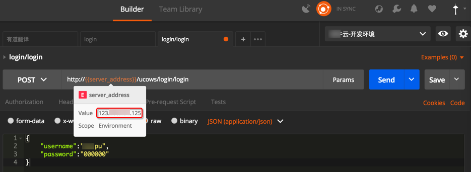
Postman导出API文档中多个环境变量的效果
顺带也去看看，导出为API文档后，带了这种Environment的变量的接口，文档长什么样子：
发现是在发布之前，需要选择对应的环境的：
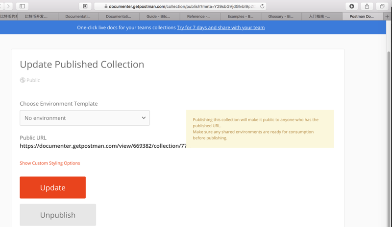
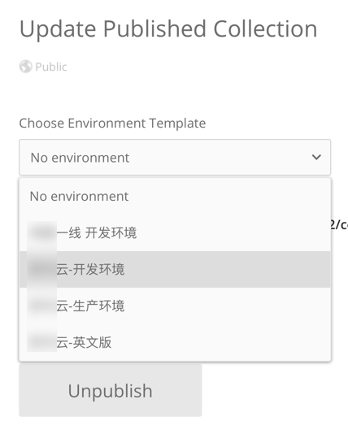
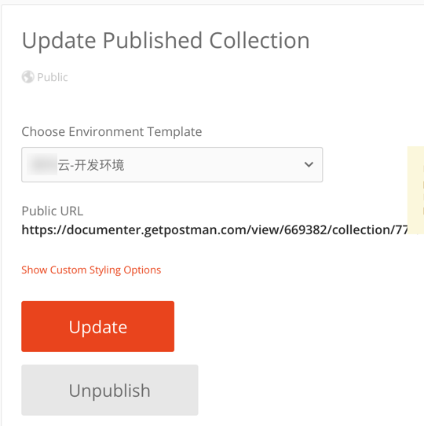
发布后的文档，可以看到所选环境和对应服务器的IP的：
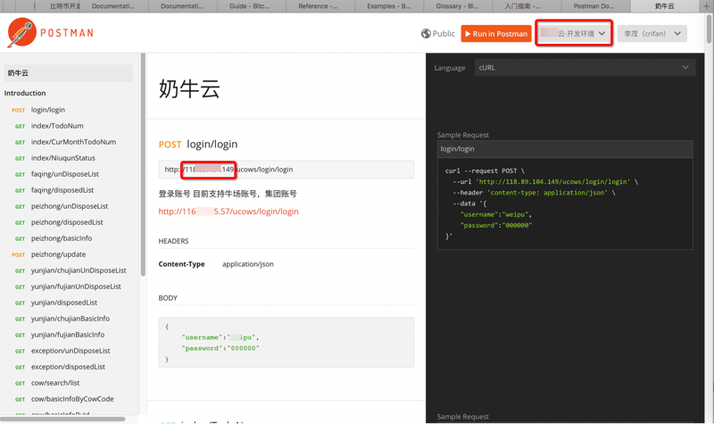
当然发布文档后，也可以实时切换环境：
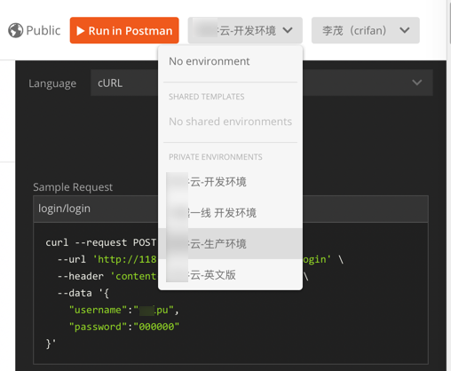
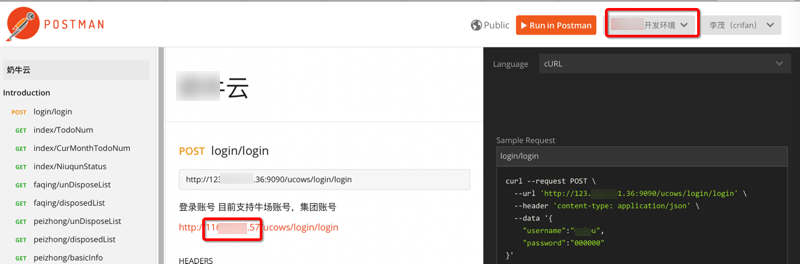
环境变量的好处
当更换服务器时，直接修改变量的IP地址：
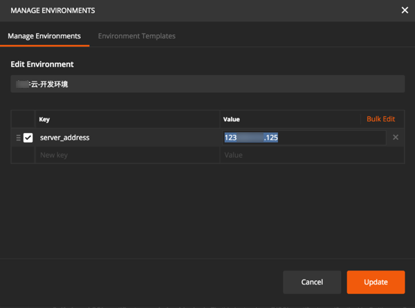
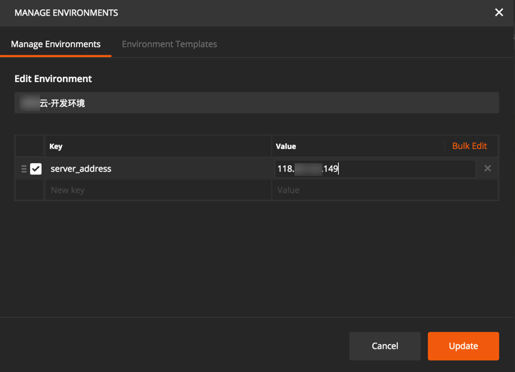
即可实时更新，当鼠标移动到变量上即可看到效果：
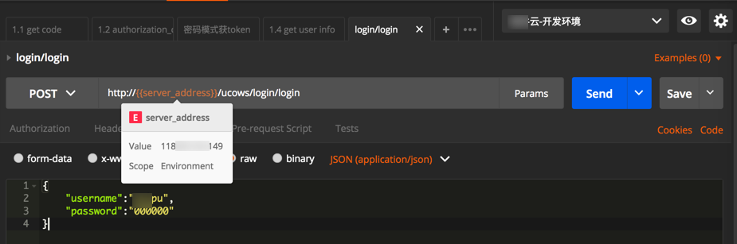